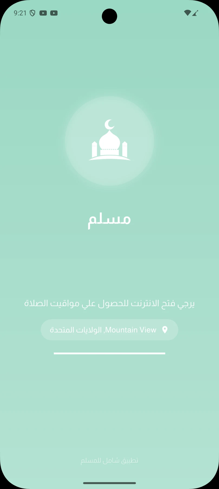
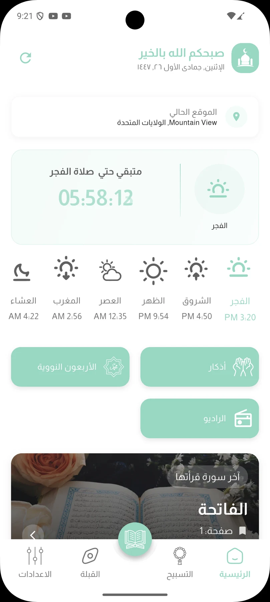
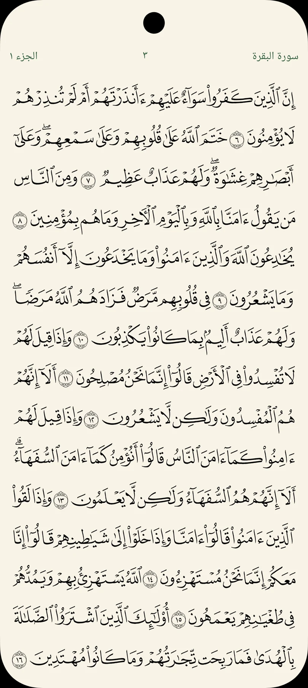

Read
Quran reading and tafsir within the app.
A Flutter Islamic app bringing together prayer times, Quran and tafsir, adhkar, Qibla direction and Hijri dates.



Screens from the app experienceThe public project presentation identifies Hussein Abozina as the developer. Application source is maintained privately.
Quran reading and tafsir within the app.
Location-based prayer times, calculation methods and prayer notification controls.
Morning and evening adhkar, Forty Nawawi, Qibla direction and Hijri dates.
The documented product combines location-based prayer calculations, notifications and a Qibla compass.
An Android release and real app screenshots provide public product evidence while the source remains private.
Scroll to explore. Select a screen to open the full view.
App source is private. Presentation repositories contain public project information and media. Project information reviewed October 6, 2026.